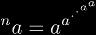
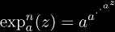
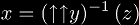
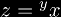
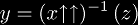

Tetration
There are two related tetration notations:
|  | (Maurer) for tetration |
|  | (Euler) for iterated exponentials |
for more notations, see the Tower Definitions page.
Super-roots are written  where 
Super-logs are written  where
|
Copyright © 2010 Andrew Robbins ( |
|